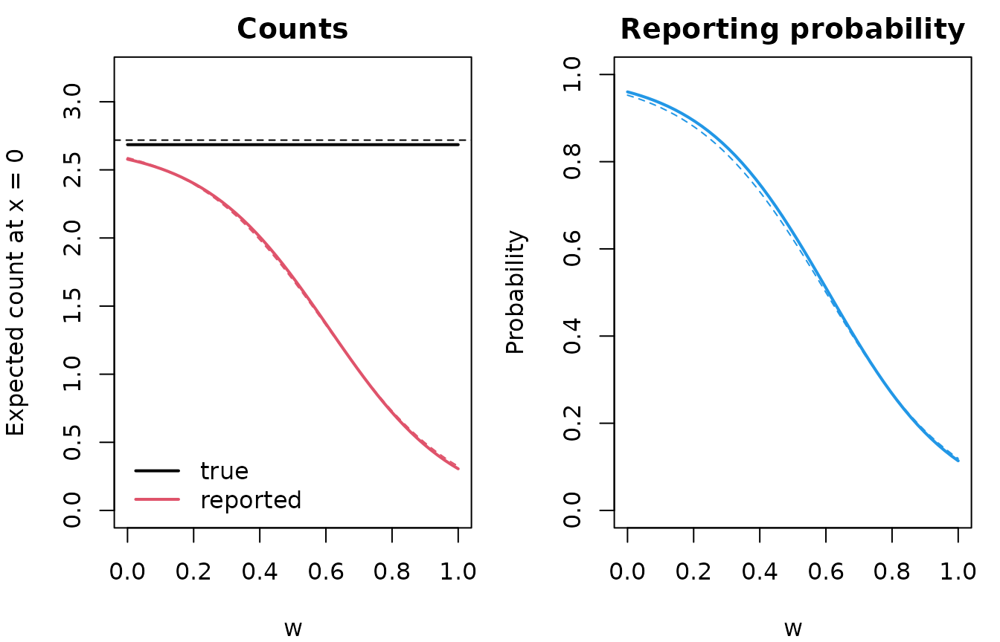

Underreporting: observed counts, true counts and identification
Source:vignettes/underreporting-and-identification.Rmd
underreporting-and-identification.RmdMany recorded counts miss events: crashes without injuries are not all reported to the police, and not every case of a disease reaches a surveillance system. An underreporting model separates the expected true count from the probability that an event is reported. This vignette shows what such a model estimates, what information lets the data separate the two parts, and what happens when that information is weak. All data here are simulated, so the truth is known; with real data, the true counts and reporting rates are not observed, and their estimates rest on the assumptions described below.
The model
The true count
follows a count distribution with mean
.
Each event is reported independently with probability
,
where
is the logistic (underreport_family = "logit", the default)
or normal ("probit") distribution function. The reported
count is a binomial thinning of the true count:
For the families that allow it (?count_families lists
them and the variance of the reported counts), the reported counts
follow the same family with mean
.
The fitted model reports three quantities:
predict(type = ) |
Quantity |
|---|---|
"response" |
expected reported count |
"true" |
expected true count |
"prob_reported" |
reporting probability |
zero_formula and underreport_formula cannot
be combined: both act on the zeros.
What the reported counts cannot tell apart
The reported counts depend on the two parts only through the product . With a constant reporting probability, is all the data can identify: a lower true rate with complete reporting and a higher true rate with incomplete reporting give exactly the same reported counts. flexCountReg refuses this model:
set.seed(1)
toy <- data.frame(x = rnorm(200))
toy$y <- rpois(200, exp(0.5 + 0.3 * toy$x))
res <- tryCatch(
countreg(y ~ x, data = toy, family = "NB2", underreport_formula = ~ 1),
error = function(e) conditionMessage(e))
cat(strwrap(res), sep = "\n")
#> An intercept-only `underreport_formula` is not identified: a constant
#> reporting probability p and the count-model intercept b0 enter the
#> likelihood only through exp(b0) * p. Add variables that affect
#> reporting but not the true counts, or analyze the reported counts
#> without an underreporting model.Separating the two parts needs information about reporting that does not also act on the true counts. In practice that information comes from:
- an exclusion restriction: a variable that changes the reporting probability but not the true count (for example, the reporting practice of the agency that records the events), justified by subject knowledge;
- the functional form of the link: with a logit or probit link, the reported mean is not log-linear in the reporting variables, and the curvature carries some information about the level of ;
- external information, such as known reporting probabilities or a validation study of true counts.
A different predictor list in the two formulas is necessary, but it does not by itself make the model identified, as the simulations below show.
A simulation with known truth
The true count is NB2 with mean and dispersion . A reporting variable affects only the reporting probability, . Two designs differ in how much the reporting probability varies:
simulate_reports <- function(n, seed, gamma) {
set.seed(seed)
x <- rnorm(n)
w <- runif(n)
mu <- exp(1 + 0.5 * x)
p <- plogis(gamma[1] + gamma[2] * w)
y_true <- rnbinom(n, size = 2, mu = mu)
data.frame(x, w, y_true, y = rbinom(n, y_true, p), mu, p)
}
designs <- list(weak = c(1.5, -2), strong = c(3, -5))
sapply(designs, function(g) round(plogis(g[1] + g[2] * c(w0 = 0, w1 = 1)), 2))
#> weak strong
#> w0 0.82 0.95
#> w1 0.38 0.12In the weak design the reporting probability runs from 0.82 down to 0.38; in the strong design it runs from 0.95, nearly complete reporting, down to 0.12.
One sample from each design
fits <- lapply(designs, function(g) {
d <- simulate_reports(2000, seed = 8, gamma = g)
countreg(y ~ x, data = d, family = "NB2", underreport_formula = ~ w,
method = "BFGS")
})
#> Warning: The underreporting model is weakly identified: the estimates of
#> Underreporting:(Intercept) and (Intercept) have correlation -0.994. The data
#> barely separate the true count mean from the reporting probability; interpret
#> the true-count estimates with caution, and consider reporting variables that do
#> not affect the true counts or external validation data.
lapply(fits, function(m) round(summary(m)$coefficients[, 1:2], 3))
#> $weak
#> Estimate Std. Error
#> (Intercept) 1.089 0.337
#> x 0.541 0.024
#> ln(alpha) -0.711 0.075
#> Underreporting:(Intercept) 1.201 1.236
#> Underreporting:w -1.936 0.836
#>
#> $strong
#> Estimate Std. Error
#> (Intercept) 0.988 0.063
#> x 0.517 0.025
#> ln(alpha) -0.694 0.076
#> Underreporting:(Intercept) 3.182 0.493
#> Underreporting:w -5.234 0.535The truth is , and = (1.5, -2) or (3, -5). In both designs, the effect of on the true count is estimated precisely: it is identified whether or not the reporting model is right, because does not enter the reporting model. The split between the true-count level and the reporting level is the hard part. In the weak design the standard errors of the two intercepts are large: the logit curve over the range of is close to log-linear, so a log-linear effect of on the reported mean fits almost as well. In the strong design, the reporting probability approaches 1 for small , and the flattening of the curve there pins down its level.
Recovery over replicates
One sample can be lucky or unlucky. Twenty replicate samples of 2,000 rows from each design give the following estimates (an illustration, not a full simulation study):
recover_one <- function(seed, gamma) {
d <- simulate_reports(2000, seed, gamma)
warned <- FALSE
m <- tryCatch(withCallingHandlers(
countreg(y ~ x, data = d, family = "NB2", underreport_formula = ~ w,
method = "BFGS"),
warning = function(w) {
warned <<- TRUE
invokeRestart("muffleWarning")
}), error = function(e) NULL)
if (is.null(m) || !isTRUE(m$model$converged)) {
return(c(NA, NA, NA, NA, converged = 0, warned = warned))
}
co <- coef(m)[c("(Intercept)", "x", "Underreporting:(Intercept)",
"Underreporting:w")]
c(co, converged = 1, warned = warned)
}
recovery <- lapply(designs, function(g)
t(sapply(101:120, recover_one, gamma = g)))
truth <- function(g) c(1, 0.5, g)
recovery_table <- do.call(rbind, lapply(names(designs), function(k) {
r <- recovery[[k]]
ok <- r[, "converged"] == 1
data.frame(design = k,
parameter = c("(Intercept)", "x", "Rep:(Intercept)", "Rep:w"),
truth = truth(designs[[k]]),
mean = colMeans(r[ok, 1:4]),
median = apply(r[ok, 1:4], 2, median),
sd = apply(r[ok, 1:4], 2, sd),
converged = sum(ok), warned = sum(r[, "warned"]),
row.names = NULL)
}))
recovery_table[, 4:6] <- round(recovery_table[, 4:6], 3)
recovery_table
#> design parameter truth mean median sd converged warned
#> 1 weak (Intercept) 1.0 1.167 1.019 0.525 20 11
#> 2 weak x 0.5 0.501 0.505 0.024 20 11
#> 3 weak Rep:(Intercept) 1.5 1.498 1.295 1.571 20 11
#> 4 weak Rep:w -2.0 -2.214 -1.820 1.061 20 11
#> 5 strong (Intercept) 1.0 0.990 0.974 0.084 20 0
#> 6 strong x 0.5 0.504 0.508 0.024 20 0
#> 7 strong Rep:(Intercept) 3.0 3.102 2.977 0.671 20 0
#> 8 strong Rep:w -5.0 -5.097 -4.907 0.705 20 0The summaries use all converged fits; warned counts the
fits for which flexCountReg warned that the underreporting model is
weakly identified. In the strong design, 0 of 20 fits gave that warning
and the estimates centre on the truth. In the weak design 11 of 20 fits
gave it, and the reporting intercept has a standard deviation of 1.6
logit units across replicates: the estimates are unstable even though
is a valid exclusion restriction. (Discarding the warned fits would not
help: the remaining ones would be a selected, biased subset.)
Predictions: reported counts, true counts and reporting
For the strong-design fit, the three predictions at across , with the simulated truth as dashed lines:
m <- fits$strong
grid <- data.frame(x = 0, w = seq(0, 1, length.out = 50))
pred <- data.frame(grid,
reported = predict(m, newdata = grid),
true = predict(m, newdata = grid, type = "true"),
p = predict(m, newdata = grid, type = "prob_reported"))
op <- par(mfrow = c(1, 2), mar = c(4, 4, 2, 1))
plot(pred$w, pred$true, type = "l", lwd = 2, ylim = c(0, 3.2),
xlab = "w", ylab = "Expected count at x = 0", main = "Counts")
lines(pred$w, pred$reported, lwd = 2, col = 2)
abline(h = exp(1), lty = 2)
lines(pred$w, exp(1) * plogis(3 - 5 * pred$w), lty = 2, col = 2)
legend("bottomleft", c("true", "reported"), col = 1:2, lwd = 2, bty = "n")
plot(pred$w, pred$p, type = "l", lwd = 2, col = 4, ylim = c(0, 1),
xlab = "w", ylab = "Probability", main = "Reporting probability")
lines(pred$w, plogis(3 - 5 * pred$w), lty = 2, col = 4)
par(op)The reported count is what a new observation is expected to show; the true count is what the model says happened. Their ratio is the reporting probability. The true count depends on the identifying assumptions above, the reported count much less so: it can be checked against new reported data, while the true count cannot.
Sensitivity to the reporting assumptions
Under the strong design, compare four analyses of the same sample: the logit and probit reporting models, a model that ignores underreporting (with entering the mean), and a model that treats the reporting probabilities as known (an offset of , as with external information):
d <- simulate_reports(2000, seed = 8, gamma = designs$strong)
d$log_p <- log(d$p)
models <- list(
logit = fits$strong,
probit = countreg(y ~ x, data = d, family = "NB2",
underreport_formula = ~ w, underreport_family = "probit",
method = "BFGS"),
ignore = countreg(y ~ x + w, data = d, family = "NB2", method = "BFGS"),
known_p = countreg(y ~ x + offset(log_p), data = d, family = "NB2",
method = "BFGS"))
at <- data.frame(x = 0, w = c(0, 1), log_p = 0)
sens <- t(sapply(models, function(m) {
has_rep <- any(grepl("^Underreporting:", names(coef(m))))
c(beta_x = coef(m)[["x"]],
true_mean_x0 = if (has_rep) predict(m, newdata = at[1, ], type = "true")
else NA,
p_w0 = if (has_rep) predict(m, newdata = at[1, ],
type = "prob_reported") else NA,
p_w1 = if (has_rep) predict(m, newdata = at[2, ],
type = "prob_reported") else NA,
AIC = AIC(m))
}))
round(sens, 3)
#> beta_x true_mean_x0 p_w0 p_w1 AIC
#> logit 0.517 2.685 0.96 0.114 6537.581
#> probit 0.518 2.687 0.97 0.109 6538.008
#> ignore 0.519 NA NA NA 6586.763
#> known_p 0.517 NA NA NA 6533.877The true mean at is , and the true reporting probabilities are 0.953 at and 0.119 at . The known- model has no reporting parameters (its true mean is = 2.719; the offset gives the reporting). Here the logit and probit links give similar answers because the reporting probability spans most of (0, 1); with less variation, the true-count level depends more on which link is assumed. The model that ignores underreporting estimates the effect of just as well but says nothing about the true counts: its intercept and coefficient describe reported counts.
A failure: the reporting variable also affects the true counts
If also enters the count model, the exclusion restriction is gone, and only the functional form of the link remains. Fitted to the same strong-design sample:
both <- withCallingHandlers(
countreg(y ~ x + w, data = d, family = "NB2", underreport_formula = ~ w,
method = "BFGS"),
warning = function(w) {
message("Warning: ", conditionMessage(w))
invokeRestart("muffleWarning")
})
#> Warning: The underreporting model is weakly identified: the estimates of Underreporting:(Intercept) and (Intercept) have correlation -0.999. The data barely separate the true count mean from the reporting probability; interpret the true-count estimates with caution, and consider reporting variables that do not affect the true counts or external validation data.
round(summary(both)$coefficients[, 1:2], 3)
#> Estimate Std. Error
#> (Intercept) 5.237 1.202
#> x 0.518 0.025
#> w -6.300 1.246
#> ln(alpha) -0.695 0.076
#> Underreporting:(Intercept) -4.224 1.190
#> Underreporting:w 5.800 0.943
round(cov2cor(vcov(both))[c("(Intercept)", "w"),
c("Underreporting:(Intercept)",
"Underreporting:w")], 3)
#> Underreporting:(Intercept) Underreporting:w
#> (Intercept) -0.999 0.946
#> w 0.995 -0.972The data were generated with no effect of on the true count and . The estimates are far from that, and the near-perfect correlations between the count and reporting coefficients show the ridge along which the likelihood barely changes: a change in the true-count coefficients is almost exactly offset by a change in the reporting coefficients. The standard errors are finite, but they describe a curvature that comes only from the assumed link.
Do not report the true-count estimates of such a model. Either justify a variable that affects reporting only, or obtain external information on reporting, or analyze the reported counts as they are.
Summary
- The reported counts identify . Separating from needs an exclusion restriction, the link’s functional form or external information, and the result is only as credible as those assumptions.
- Effects of variables that appear only in the count model are estimated well even when the split between true and reported counts is not.
- Check stability: standard errors of the intercepts, warnings about flat ridges, and the sensitivity of the true-count predictions to the link.
- A reporting model does not correct other measurement problems, such as misclassified events or dependence between events.
Reproducibility and next steps
The samples use seeds 8 and 101 to 120 with
simulate_reports() above.
-
?count_familiesgives the variance of the reported counts for each family that allows underreporting. -
?countregdocumentsunderreport_formulaandunderreport_family.